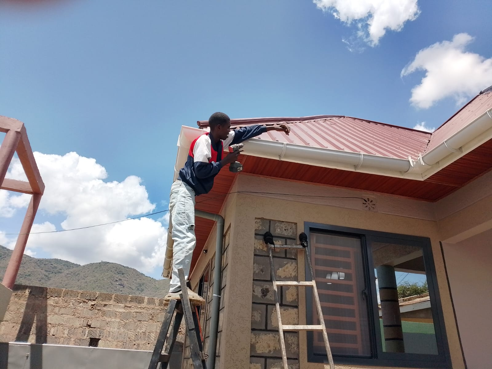

🔧
Plumbing Repairs
Repairing leaking pipes, taps, valves and common plumbing faults.
From everyday repairs to plumbing installations, James Mwangi offers practical plumbing services for homes, businesses and building projects in Namanga Town.
Practical help for plumbing projects, fittings, repairs and water systems.
Repairing leaking pipes, taps, valves and common plumbing faults.
Installation and replacement of water supply pipes and connections.
Installation of showers, mixers, taps, sinks and bathroom fixtures.
Fitting and replacement of toilets, basins and sanitary fittings.
Plumbing connections for water tanks, pumps and filtration systems.
Drainage pipe installation, maintenance and clearing blockages.

James Mwangi provides plumbing services in Namanga Town. Whether you need a repair, new fittings or plumbing work for a project, get in touch to discuss the job.
Photographs provided for James Mwangi’s plumbing website. Original photos are displayed without editing.
Call James Mwangi to discuss your plumbing needs.